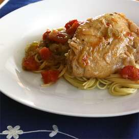

Cacciatore de pollo al estilo del norte de Italia

Un plato de pollo estilo cazador del norte de Italia. Servir sobre pasta.
Igredientes
- 1 (4 libras) de pollo entero, cortado en 4 piezas
- 2 cucharadas de aceite de oliva
- 1 paquete (8 onzas) de champiñones, picados
- 1 cebolla mediana, picada
- 1 tallo de apio, picado
- 2 dientes de ajo, picados
- ½ taza de vino blanco seco
- 1 lata (14 onzas) de tomates cortados en cubitos
- ½ taza de caldo de pollo
- ¼ taza de perejil fresco picado
- 1 cucharadita de orégano seco
- 1 pizca de hojuelas de pimiento rojo
- sal y pimienta negra molida al gusto
Pasos
- Enjuague los trozos de pollo y séquelos.
- Caliente el aceite en una sartén grande a fuego medio. Agregue el pollo y dore, de 4 a 5 minutos por lado. Retire el pollo a un plato.
- Agregue los champiñones, la cebolla y el apio a la grasa de la sartén y saltee hasta que estén suaves, aproximadamente 5 minutos. Agregue el ajo y cocine hasta que esté fragante, aproximadamente 2 minutos más.
- Regrese el pollo a la sartén. Agregue el vino blanco y cocine hasta que se haya evaporado casi por completo, de 2 a 3 minutos. Agregue los tomates cortados en cubitos, el caldo de pollo, el perejil, el orégano, las hojuelas de pimienta, la sal y la pimienta. Cubra y cocine a fuego lento hasta que el pollo ya no esté rosado en el hueso y los jugos salgan claros, aproximadamente 30 minutos.